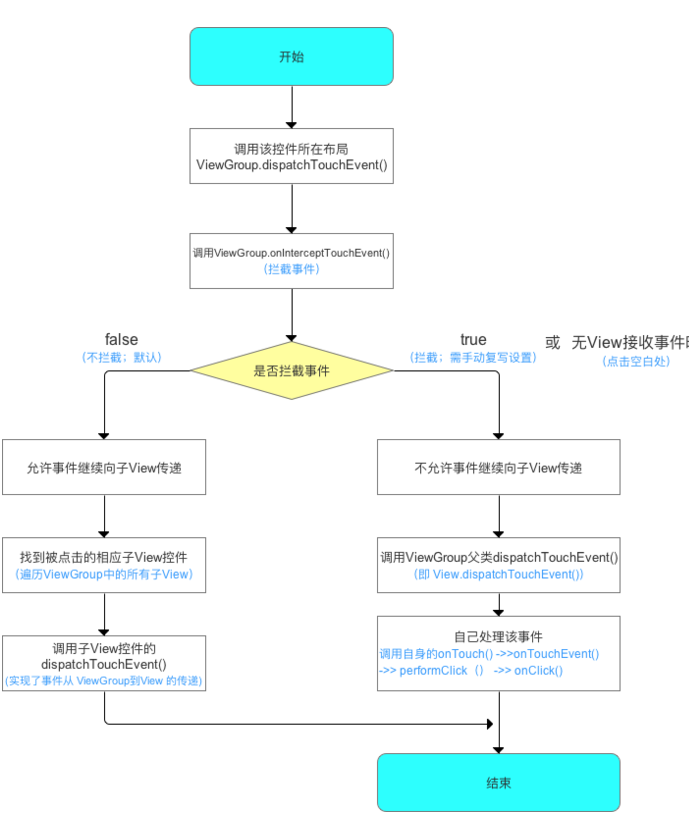

事件传递过程
实际上，当我们手指触摸屏幕的时候，事件最先是传递给当前的Actvity，由Actvity的dispatchTouchEvent方法来分发事件，而Actvity会将事件传递给Window对象来分发，Window对象再传递给DecorView,DecorView则是我们在Actvity中通过setContentView后所设置的布局的父容器，通过getWindow().getDecorView().findViewById(android.R.id.content).getChildAt(0)这个方式就能获取到Activity所设置的布局。
Activity 的 dispatchTouchEvent方法
public boolean dispatchTouchEvent(MotionEvent ev) {
if (ev.getAction() == MotionEvent.ACTION_DOWN) {
//空方法
onUserInteraction();
}
//将事件传递给PhoneWindow处理
if (getWindow().superDispatchTouchEvent(ev)) {
return true;
}
return onTouchEvent(ev);
}
Window的superDispatchTouchEvent将事件分配给跟布局mDecor的superDispatchTouchEvent
@Override
public boolean superDispatchTouchEvent(MotionEvent event) {
//将事件传递给根View DecorView处理
return mDecor.superDispatchTouchEvent(event);
}
最终将事件传递给 FrameLayout 的dispatchTouchEvent
public boolean superDispatchTouchEvent(MotionEvent event) {
//调用DecorView的父类 也就是FrameLayout的dispatchTouchEvent
return super.dispatchTouchEvent(event);
}
调用FrameLayout 的父类ViewGroup 的dispatchTouchEvent
ViewGroup的事件分发
@Override
public boolean dispatchTouchEvent(MotionEvent ev) {
.......
final boolean intercepted;
if (actionMasked == MotionEvent.ACTION_DOWN
|| mFirstTouchTarget != null) {
//是否允许事件被拦截
final boolean disallowIntercept = (mGroupFlags & FLAG_DISALLOW_INTERCEPT) != 0;
//如果不容许拦截
if (!disallowIntercept) {
//事件是否被拦截
intercepted = onInterceptTouchEvent(ev);
ev.setAction(action); // restore action in case it was changed
} else {
intercepted = false;
}
} else {
// There are no touch targets and this action is not an initial down
// so this view group continues to intercept touches.
intercepted = true;
}
// If intercepted, start normal event dispatch. Also if there is already
// a view that is handling the gesture, do normal event dispatch.
if (intercepted || mFirstTouchTarget != null) {
ev.setTargetAccessibilityFocus(false);
}
// Check for cancelation.
final boolean canceled = resetCancelNextUpFlag(this)
|| actionMasked == MotionEvent.ACTION_CANCEL;
// Update list of touch targets for pointer down, if needed.
final boolean split = (mGroupFlags & FLAG_SPLIT_MOTION_EVENTS) != 0;
TouchTarget newTouchTarget = null;
boolean alreadyDispatchedToNewTouchTarget = false;
//事件未被拦截时
if (!canceled && !intercepted) {
// If the event is targeting accessibility focus we give it to the
// view that has accessibility focus and if it does not handle it
// we clear the flag and dispatch the event to all children as usual.
// We are looking up the accessibility focused host to avoid keeping
// state since these events are very rare.
View childWithAccessibilityFocus = ev.isTargetAccessibilityFocus()
? findChildWithAccessibilityFocus() : null;
if (actionMasked == MotionEvent.ACTION_DOWN
|| (split && actionMasked == MotionEvent.ACTION_POINTER_DOWN)
|| actionMasked == MotionEvent.ACTION_HOVER_MOVE) {
final int actionIndex = ev.getActionIndex(); // always 0 for down
final int idBitsToAssign = split ? 1 << ev.getPointerId(actionIndex)
: TouchTarget.ALL_POINTER_IDS;
// Clean up earlier touch targets for this pointer id in case they
// have become out of sync.
removePointersFromTouchTargets(idBitsToAssign);
//里面做了一个 For 循环，通过倒序遍历 ViewGroup 下面的所有子 View，然后一个一个判断
//点击位置是否是该子 View 的布局区域，当然还有一些其他的，
//由于篇幅原因，这里就不细讲 了。
final int childrenCount = mChildrenCount;
if (newTouchTarget == null && childrenCount != 0) {
final float x = ev.getX(actionIndex);
final float y = ev.getY(actionIndex);
// Find a child that can receive the event.
// Scan children from front to back.
final ArrayList<View> preorderedList = buildTouchDispatchChildList();
final boolean customOrder = preorderedList == null
&& isChildrenDrawingOrderEnabled();
final View[] children = mChildren;
for (int i = childrenCount - 1; i >= 0; i--) {
final int childIndex = getAndVerifyPreorderedIndex(
childrenCount, i, customOrder);
final View child = getAndVerifyPreorderedView(
preorderedList, children, childIndex);
// If there is a view that has accessibility focus we want it
// to get the event first and if not handled we will perform a
// normal dispatch. We may do a double iteration but this is
// safer given the timeframe.
if (childWithAccessibilityFocus != null) {
if (childWithAccessibilityFocus != child) {
continue;
}
childWithAccessibilityFocus = null;
i = childrenCount - 1;
}
if (!canViewReceivePointerEvents(child)
|| !isTransformedTouchPointInView(x, y, child, null)) {
ev.setTargetAccessibilityFocus(false);
continue;
}
newTouchTarget = getTouchTarget(child);
if (newTouchTarget != null) {
// Child is already receiving touch within its bounds.
// Give it the new pointer in addition to the ones it is handling.
newTouchTarget.pointerIdBits |= idBitsToAssign;
break;
}
resetCancelNextUpFlag(child);
if (dispatchTransformedTouchEvent(ev, false, child, idBitsToAssign)) {
// Child wants to receive touch within its bounds.
mLastTouchDownTime = ev.getDownTime();
if (preorderedList != null) {
// childIndex points into presorted list, find original index
for (int j = 0; j < childrenCount; j++) {
if (children[childIndex] == mChildren[j]) {
mLastTouchDownIndex = j;
break;
}
}
} else {
mLastTouchDownIndex = childIndex;
}
mLastTouchDownX = ev.getX();
mLastTouchDownY = ev.getY();
newTouchTarget = addTouchTarget(child, idBitsToAssign);
alreadyDispatchedToNewTouchTarget = true;
break;
}
// The accessibility focus didn't handle the event, so clear
// the flag and do a normal dispatch to all children.
ev.setTargetAccessibilityFocus(false);
}
if (preorderedList != null) preorderedList.clear();
}
if (newTouchTarget == null && mFirstTouchTarget != null) {
// Did not find a child to receive the event.
// Assign the pointer to the least recently added target.
newTouchTarget = mFirstTouchTarget;
while (newTouchTarget.next != null) {
newTouchTarget = newTouchTarget.next;
}
newTouchTarget.pointerIdBits |= idBitsToAssign;
}
}
}
//事件被拦截时 mFirstTouchTarget为空
// Dispatch to touch targets.
if (mFirstTouchTarget == null) {
// No touch targets so treat this as an ordinary view.
handled = dispatchTransformedTouchEvent(ev, canceled, null,
TouchTarget.ALL_POINTER_IDS);
} else {
// Dispatch to touch targets, excluding the new touch target if we already
// dispatched to it. Cancel touch targets if necessary.
TouchTarget predecessor = null;
TouchTarget target = mFirstTouchTarget;
while (target != null) {
final TouchTarget next = target.next;
if (alreadyDispatchedToNewTouchTarget && target == newTouchTarget) {
handled = true;
} else {
final boolean cancelChild = resetCancelNextUpFlag(target.child)
|| intercepted;
if (dispatchTransformedTouchEvent(ev, cancelChild,
target.child, target.pointerIdBits)) {
handled = true;
}
if (cancelChild) {
if (predecessor == null) {
mFirstTouchTarget = next;
} else {
predecessor.next = next;
}
target.recycle();
target = next;
continue;
}
}
predecessor = target;
target = next;
}
}
// Update list of touch targets for pointer up or cancel, if needed.
if (canceled
|| actionMasked == MotionEvent.ACTION_UP
|| actionMasked == MotionEvent.ACTION_HOVER_MOVE) {
resetTouchState();
} else if (split && actionMasked == MotionEvent.ACTION_POINTER_UP) {
final int actionIndex = ev.getActionIndex();
final int idBitsToRemove = 1 << ev.getPointerId(actionIndex);
removePointersFromTouchTargets(idBitsToRemove);
}
}
if (!handled && mInputEventConsistencyVerifier != null) {
mInputEventConsistencyVerifier.onUnhandledEvent(ev, 1);
}
return handled;
}
当ViewGroup 拦截了事件 onInterceptTouchEvent返回为true mFirstTouchTarget为空
会进入下面的判断
if (mFirstTouchTarget == null) {
// No touch targets so treat this as an ordinary view.
handled = dispatchTransformedTouchEvent(ev, canceled, null,
TouchTarget.ALL_POINTER_IDS);
}
private boolean dispatchTransformedTouchEvent(MotionEvent event, boolean cancel,
View child, int desiredPointerIdBits) {
.......
// Perform any necessary transformations and dispatch.
if (child == null) {
handled = super.dispatchTouchEvent(transformedEvent);
} else {
final float offsetX = mScrollX - child.mLeft;
final float offsetY = mScrollY - child.mTop;
transformedEvent.offsetLocation(offsetX, offsetY);
if (! child.hasIdentityMatrix()) {
transformedEvent.transform(child.getInverseMatrix());
}
handled = child.dispatchTouchEvent(transformedEvent);
}
// Done.
transformedEvent.recycle();
return handled;
}
由于传入的child 为null , 最终会调用ViewGroup的父类View 的 dispatchTouchEvent
当ViewGroup 未拦截时 及 onInterceptTouchEvent返回值未false ，事件会传递给ViewGroup对应的子View 进行处理
最终事件都会经过View 的dispatchTouchEvent进行处理
View的事件分发
public boolean dispatchTouchEvent(MotionEvent event) {
// If the event should be handled by accessibility focus first.
if (event.isTargetAccessibilityFocus()) {
// We don't have focus or no virtual descendant has it, do not handle the event.
if (!isAccessibilityFocusedViewOrHost()) {
return false;
}
// We have focus and got the event, then use normal event dispatch.
event.setTargetAccessibilityFocus(false);
}
boolean result = false;
if (mInputEventConsistencyVerifier != null) {
mInputEventConsistencyVerifier.onTouchEvent(event, 0);
}
final int actionMasked = event.getActionMasked();
if (actionMasked == MotionEvent.ACTION_DOWN) {
// Defensive cleanup for new gesture
stopNestedScroll();
}
if (onFilterTouchEventForSecurity(event)) {
if ((mViewFlags & ENABLED_MASK) == ENABLED && handleScrollBarDragging(event)) {
result = true;
}
//noinspection SimplifiableIfStatement
ListenerInfo li = mListenerInfo;
if (li != null && li.mOnTouchListener != null
&& (mViewFlags & ENABLED_MASK) == ENABLED
&& li.mOnTouchListener.onTouch(this, event)) {
result = true;
}
if (!result && onTouchEvent(event)) {
result = true;
}
}
if (!result && mInputEventConsistencyVerifier != null) {
mInputEventConsistencyVerifier.onUnhandledEvent(event, 0);
}
// Clean up after nested scrolls if this is the end of a gesture;
// also cancel it if we tried an ACTION_DOWN but we didn't want the rest
// of the gesture.
if (actionMasked == MotionEvent.ACTION_UP ||
actionMasked == MotionEvent.ACTION_CANCEL ||
(actionMasked == MotionEvent.ACTION_DOWN && !result)) {
stopNestedScroll();
}
return result;
}
由以上代码可以看出 onTouch() 方法优先级高于 onTouchEvent(event) 方法
public boolean onTouchEvent(MotionEvent event) {
final float x = event.getX();
final float y = event.getY();
final int viewFlags = mViewFlags;
final int action = event.getAction();
final boolean clickable = ((viewFlags & CLICKABLE) == CLICKABLE
|| (viewFlags & LONG_CLICKABLE) == LONG_CLICKABLE)
|| (viewFlags & CONTEXT_CLICKABLE) == CONTEXT_CLICKABLE;
if ((viewFlags & ENABLED_MASK) == DISABLED) {
if (action == MotionEvent.ACTION_UP && (mPrivateFlags & PFLAG_PRESSED) != 0) {
setPressed(false);
}
mPrivateFlags3 &= ~PFLAG3_FINGER_DOWN;
// A disabled view that is clickable still consumes the touch
// events, it just doesn't respond to them.
return clickable;
}
if (mTouchDelegate != null) {
if (mTouchDelegate.onTouchEvent(event)) {
return true;
}
}
if (clickable || (viewFlags & TOOLTIP) == TOOLTIP) {
switch (action) {
case MotionEvent.ACTION_UP:
mPrivateFlags3 &= ~PFLAG3_FINGER_DOWN;
if ((viewFlags & TOOLTIP) == TOOLTIP) {
handleTooltipUp();
}
if (!clickable) {
removeTapCallback();
removeLongPressCallback();
mInContextButtonPress = false;
mHasPerformedLongPress = false;
mIgnoreNextUpEvent = false;
break;
}
boolean prepressed = (mPrivateFlags & PFLAG_PREPRESSED) != 0;
if ((mPrivateFlags & PFLAG_PRESSED) != 0 || prepressed) {
// take focus if we don't have it already and we should in
// touch mode.
boolean focusTaken = false;
if (isFocusable() && isFocusableInTouchMode() && !isFocused()) {
focusTaken = requestFocus();
}
if (prepressed) {
// The button is being released before we actually
// showed it as pressed. Make it show the pressed
// state now (before scheduling the click) to ensure
// the user sees it.
setPressed(true, x, y);
}
if (!mHasPerformedLongPress && !mIgnoreNextUpEvent) {
// This is a tap, so remove the longpress check
removeLongPressCallback();
// Only perform take click actions if we were in the pressed state
if (!focusTaken) {
// Use a Runnable and post this rather than calling
// performClick directly. This lets other visual state
// of the view update before click actions start.
if (mPerformClick == null) {
mPerformClick = new PerformClick();
}
if (!post(mPerformClick)) {
performClickInternal();
}
}
}
if (mUnsetPressedState == null) {
mUnsetPressedState = new UnsetPressedState();
}
if (prepressed) {
postDelayed(mUnsetPressedState,
ViewConfiguration.getPressedStateDuration());
} else if (!post(mUnsetPressedState)) {
// If the post failed, unpress right now
mUnsetPressedState.run();
}
removeTapCallback();
}
mIgnoreNextUpEvent = false;
break;
case MotionEvent.ACTION_DOWN:
if (event.getSource() == InputDevice.SOURCE_TOUCHSCREEN) {
mPrivateFlags3 |= PFLAG3_FINGER_DOWN;
}
mHasPerformedLongPress = false;
if (!clickable) {
checkForLongClick(0, x, y);
break;
}
if (performButtonActionOnTouchDown(event)) {
break;
}
// Walk up the hierarchy to determine if we're inside a scrolling container.
boolean isInScrollingContainer = isInScrollingContainer();
// For views inside a scrolling container, delay the pressed feedback for
// a short period in case this is a scroll.
if (isInScrollingContainer) {
mPrivateFlags |= PFLAG_PREPRESSED;
if (mPendingCheckForTap == null) {
mPendingCheckForTap = new CheckForTap();
}
mPendingCheckForTap.x = event.getX();
mPendingCheckForTap.y = event.getY();
postDelayed(mPendingCheckForTap, ViewConfiguration.getTapTimeout());
} else {
// Not inside a scrolling container, so show the feedback right away
setPressed(true, x, y);
checkForLongClick(0, x, y);
}
break;
case MotionEvent.ACTION_CANCEL:
if (clickable) {
setPressed(false);
}
removeTapCallback();
removeLongPressCallback();
mInContextButtonPress = false;
mHasPerformedLongPress = false;
mIgnoreNextUpEvent = false;
mPrivateFlags3 &= ~PFLAG3_FINGER_DOWN;
break;
case MotionEvent.ACTION_MOVE:
if (clickable) {
drawableHotspotChanged(x, y);
}
// Be lenient about moving outside of buttons
if (!pointInView(x, y, mTouchSlop)) {
// Outside button
// Remove any future long press/tap checks
removeTapCallback();
removeLongPressCallback();
if ((mPrivateFlags & PFLAG_PRESSED) != 0) {
setPressed(false);
}
mPrivateFlags3 &= ~PFLAG3_FINGER_DOWN;
}
break;
}
return true;
}
return false;
}
总结
各阶段事件传递的示意图
Activity 的事件分发示意图
ViewGroup 事件分发示意图
View 的事件分发示意图

事件分发工作流程总结